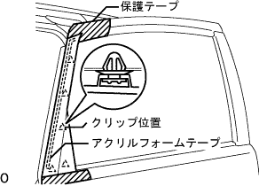
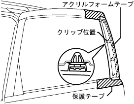
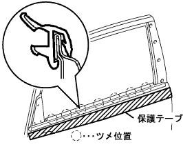

スライドドアガラスウエザストリツプASSY OUT LH 取り外し |
| 1. リヤドア ウインドウ フレーム モールディング FR LH取りはずし |
|  |
スライドドアパネルに保護テープを貼る。
アクリルフォームテープの接合部およびクリップ5箇所のかん合をはずし、リヤドア ウインドウ フレーム モールディング FR LHを取りはずす。
| 2. リヤドア ウインドウ フレーム モールディング RR LH取りはずし |
|  |
スライドドアパネルに保護テープを貼る。
アクリルフォームテープの接合部およびクリップ４箇所のかん合をはずし、リヤドア ウインドウ フレーム モールディング RR LHを取りはずす。
| 3. フロントドアガラスアウタウエザストリップ クリップ取りはずし |
|  |
フロントドア ガラス アウタウェザストリップ クリップに沿ってドアパネル側に保護テープを貼る。
ルーフモールディングリムーバを使用して、ツメのかん合をはずし、スライドドアガラスウエザストリップASSY OUT LHを取りはずす。